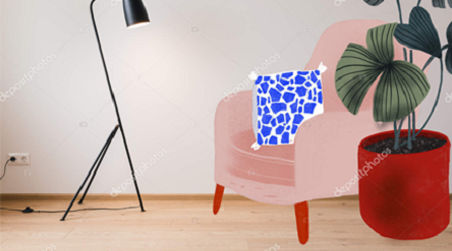
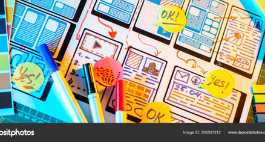

Студенты колледжа на занятиях учатся рисовать и разбираться в стилях, гармонично сочетать цвета и строить композиции, читать планы и чертежи, знать особенности современных материалов и технологии их применения. Выпускники колледжа владеют компьютером и умеют пользоваться современными издательско — графическими программами:

О СПЕЦИАЛЬНОСТИ


Специальность: 022 «Дизайн»
Работа дизайнера — это очень увлекательная, но непростая и творческая работа. Дизайнер должен
сочетать в себе качества художника и конструктора одновременно. Трудно перечислить те сферы, где
сегодня не работают дизайнеры: реклама и полиграфия, web-дизайн, дизайн интерьера и ландшафтов,
мебели, предметов потребления, тканей, витражные и макетные мастерские, и др.
Обучение проводится на базе 9-х и 11-х классов по программе младшего профессионального бакалавра.
НАПРАВЛЕНИЯ ВАШЕЙ
БУДУЩЕЙ РАБОТЫ

Дизайн среды
оформление и проектирование интерьеров помещений, ландшафтов парков и скверов, приусадебных участков.

Графический дизайн
создание фирменных знаков, фирменного стиля, рекламной и полиграфической продукции, оформление книг и разных изделий.

Web-дизайн
создании сайтов, начиная от разработки концепции и заканчивая проработкой внешнего вида и отрисовкой графических элементов, включая иконки, кнопки,,баннеры, инфографику
Что изучают студенты:


- Рисунок, Живопись, Композиция;
- Художественное проектирование и макетирование;
- «Шрифт», Черчение, Архитектурная графика
- «Компьютерное проектирование»;
- Предметы декоративно-прикладного искусства;
- «История искусства», «Эргономика» «Фитодизайн»;
- «История искусства», «Эргономика» «Фитодизайн»;
- «История искусства», «Эргономика» «Фитодизайн»;
УЧЕБНАЯ
ПРАКТИКА

В конце каждого курса в июне проводится практика по зарисовкам разной сложности и пейзажным видам, конструированию, художественному и компьютерному проектированию. Практика проводится как на пленэре ( вне стен колледжа), а также в колледже. Практикуются выезды и в другие города по желанию студентов. Практика длится: 2 недели.
Диплом
В конце 4 курса выпускники защищают дипломный проект, в который входит разработка интерьера, фирменного стиля предприятия или графическая работа по оформлению разных изделий ( книг, игр …).
В разработку интерьера входит создание чертежей помещений до и после реконструкции, визуализация отдельных элементов интерьера и перспектив, описание концепции, цветовых и архитектурно-планировочных решений, освещенности и др.
После окончания 4 курса колледжа выпускники получают диплом профессионального младшего бакалавра по специальности 022 «Дизайн».
Они уже могут работать по специальности или продолжить учебу на бакалавра и в дальнейшем на магистра.

ОСТАЛИСЬ ВОПРОСЫ?